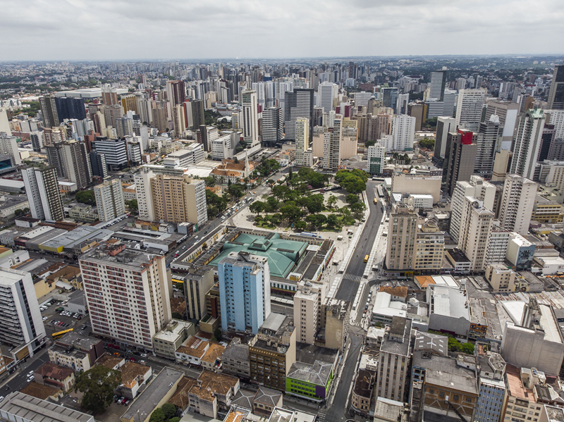

Curitiba é a capital do estado do Paraná e é conhecida por sua organização urbana e qualidade de vida. A cidade se destaca pelo planejamento inovador e pelas soluções sustentáveis aplicadas ao transporte público e ao meio ambiente.
Além disso, Curitiba possui diversos parques e áreas verdes, como o famoso Jardim Botânico, que atraem moradores e turistas. A cidade também é reconhecida por sua rica vida cultural, com teatros, museus e eventos que celebram a diversidade.
